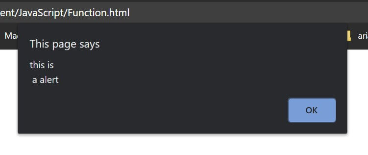
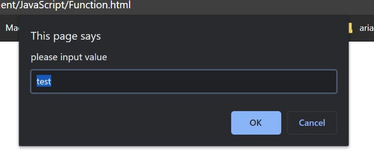

这篇文章上次修改于 681 天前，可能其部分内容已经发生变化，如有疑问可询问作者。
JavaScript function 就是一个执行特定任务的代码块。
使用 function 的优点是：
- 代码复用
- 通过传入不同参数得到不同结果
function 需要被调用才能执行。
定义
使用关键词 function 来定义一个 function，需要指定名称，使用大括号{} 来定义代码块：
function name() {
//code to be executed
}function name 可以包含字符、数字，下划线和 & 符号。
下面定义一个简单的 function：
function myFunction() {
alert("call the function");
}
myFunction();一个 function 可以被调用任意次数，
当需要调用 function 时，直接使用 function name 名称及小括号() 即可。注意结尾要写分号;。
还有一种调用写法：myFunction.call()。当使用这种方法时，会自动将关键词 this 传入此 function，后续会详细介绍。
function 参数
function 可以接收参数，在定义时需要列出来：
functionName(param1, param2, param3) {
// some code
}多个参数使用逗号, 隔开。
当定义了参数后，就可以在 function 代码块内使用：
function myFunction(name) {
alert("hi " + name);
}
myFunction("marco");以上第一了一个 function 有一个 name 参数，当调用此 function 时需要给 name 赋值。function 内部就会将赋值数据分配个 name 参数。
调用 function 时，通过不同的参数值来得到不同的结果：
myFunction("marco");
myFunction("john");
myFunction("tom");使用逗号分隔多个参数：
function myFunction(name, age) {
alert("my name is " + name + ", age is " + age);
}
myFunction("marco", 20);JavaScript 不会检查调用 function 时的传入参数个数和定义的参数个数是否一致，如果调用时传入参数数量少于 function 定义参数个数，则缺失的参数会被赋值为 undefined，表示没有被赋值数据。如果传入参数数量大于 function 定义参数个数，可以使用数组：arguments 来访问这些传入数据，在 function 内可以被调用，形如：arguments[0], arguments[1]，arguments 数组是 function 内自动定义的，按顺序存储所有的传入参数数据。
请看下面示例：
function test(a, b) {
console.log(arguments[0]);
console.log(arguments[1]);
console.log(arguments[2]);
}
test(1, 2, 3);
//output:
//1
//2
//3以上示例中，function 本身只定义了 2 个参数，但是我们在调用时传入了 3 个数据，这时候为了访问到第 3 个数据，就需要使用 arguments 数组来处理了。可以看到 function 内除了使用定义的参数名外，也可以使用内部自动定义的 arguments 数组来访问传入数据。
function 可以有一个可选的 return 命令，用来从 function 返回一个数据。
当 JavaScript 执行到 return 时，会停止执行后续指令。
下面的示例中，我们计算两个参数的和并返回结果：
function myFunction(a, b) {
return a + b;
}
var x = myFunction(1, 2);变量 x 的值就是 3。
如果 function 中没有 return 则默认会返回 undefined。
Alert, Prompt, Confirm
JavaScript 提供三种弹出窗口：Alert, Prompt, Confirm。
alert Box 用来给用户显示一个提示信息，需要点击 OK 来取消弹窗。有一个参数：
alert("this is a alert");信息中需要换行的话可以加入 \n：
alert("this is\n a alert");
效果如下：

Prompt Box 用来弹出一个用户可以输入数据的提示窗口。
用户需要点击 OK 或 cancel 来退出窗口，如果点击 OK 则会 return 输入的数据，如果点击 cancel 则会返回 null。
prompt() 有两个参数，第一个是窗口显示的提示信息字符串，第二个是输入框的默认字符(可选项)：
var a = prompt("please input value", "test");
document.write(a);效果如下：

选择 OK 后变量 a 会赋值为输入的数据。
confirm box 可以用来作为确认对话框。
用户必须点击 OK 或 cancel 来退出窗口，当点击 OK 后 box 会返回 true，当点击 cancel 后 box 会返回 false：
var result = confirm("if confirm");
if (result) {
alert("confirmed");
}
else {
alert("not confirmd");
}弹出窗口不要过多的使用，因为弹出窗口会导致页面不可用。
inline function
有一种特殊的 function 可以在直接在调用中进行定义，不需要写 function 名称。例如想要对 array 数组的每个元素执行一个 function，通过 forEach method 来给每个元素调用 function：
var arr = [1, 2, 3];
arr.forEach(function(el) {
console.log(el * 2);
});function 直接在调用中定义，参数 el 的值通过 forEach method 来传入每个元素的数据。
下一章介绍的 object 中，要定义一个 method 就可以使用 inline function 来建立：
function person(name, age, color) {
this.name = name;
this.age = age;
this.favColor = color;
this.changeName = function(name) {
this.name = name;
}
}具体的介绍参考：JavaScript 入门教程之五 -- Objects
apply and call method
通过 function 的 apply() 和 call() method，可以将 method 应用于其他外部 object 上。
object 将在下一章节进行介绍：JavaScript 入门教程之五 -- Objects
下面的示例中，我们将 person object 的 fullName method 应用在 person1 object上，也就是使用了 person1 的数据来调用 fullName：
var person = {
fullName: function () {
console.log(this.firstName + " " + this.lastName);
}
}
var person1 = {
firstName: "marco",
lastName: "nie"
}
person.fullName.apply(person1);
//output:
//marco nie以上示例中，我们使用了 person1 的 properties 作为 person 的数据来调用 function。
如果调用的 function 需要传入参数，需要在 apply method 中以数组的形式传入参数：
var person = {
fullName: function (city, country) {
console.log(this.firstName + " " + this.lastName + ", " + city + " " + country);
}
}
var person1 = {
firstName: "marco",
lastName: "nie"
}
person.fullName.apply(person1, ["hz", "china"]);
//output:
//marco nie, hz china注意第一个参数还是一个 object，表示使用其 properties 作为被调用的 function 所在 object 的 properties，后面的数组作为 function 的参数数据。
call() method 和 apply() 功能类似，区别是传入 function 的参数时需要分开单独传入：
person.fullName.call(person1, "hz", "china");以上指令效果和上面的示例一样。
使用这种方法可以实现调用 function 时将所有参数作为一个数组出入：
function test(a, b, c) {
console.log(a + b + c);
}
var arr = [1, 2, 3];
test.apply(null, arr);function 的常规使用方法就介绍完毕。
没有评论